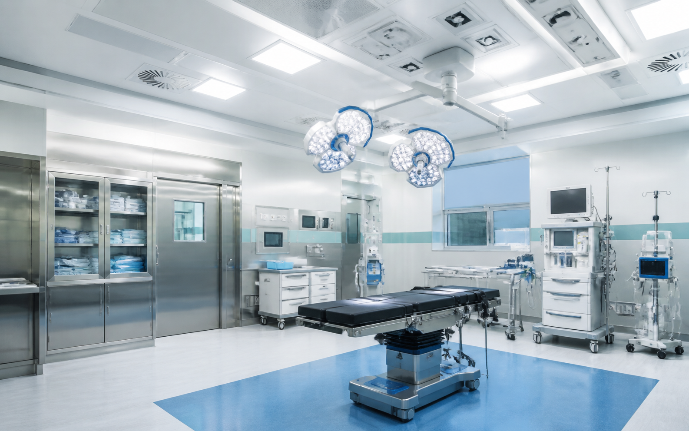
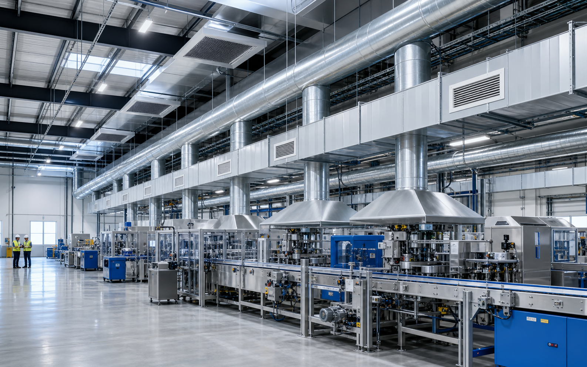
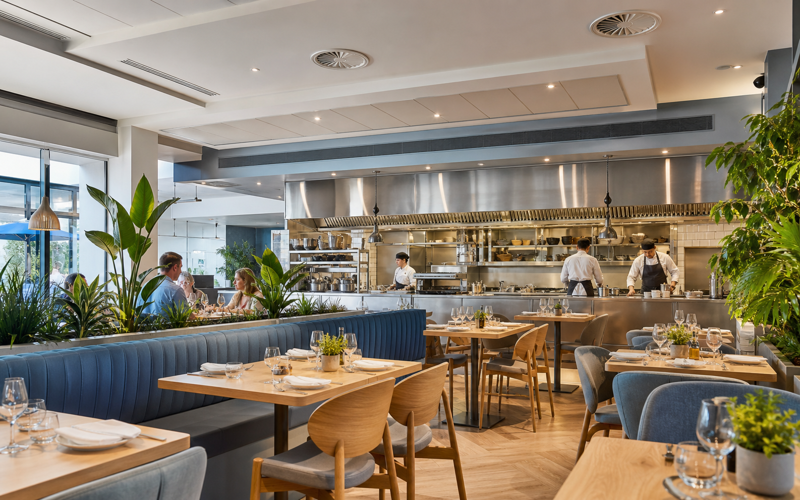
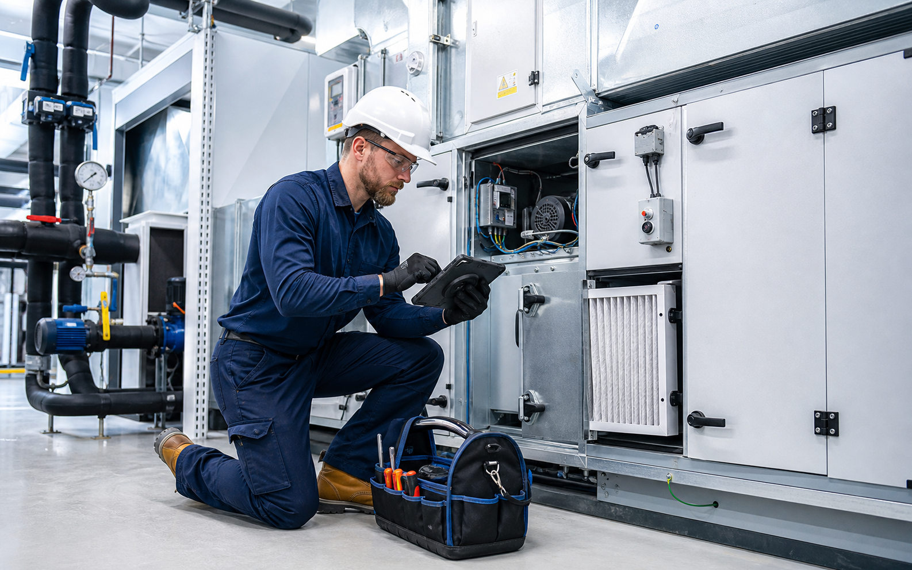
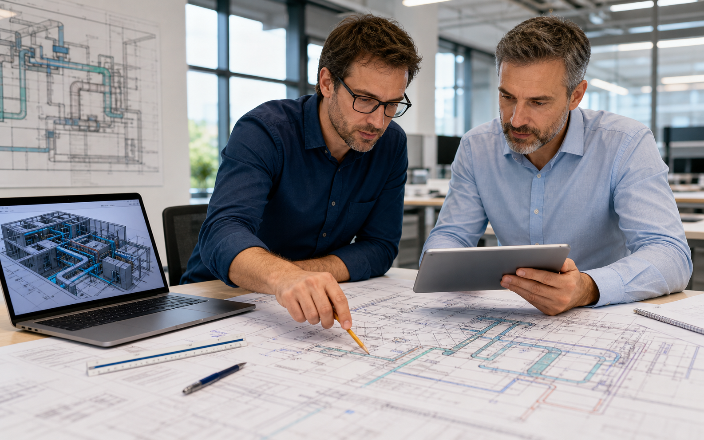
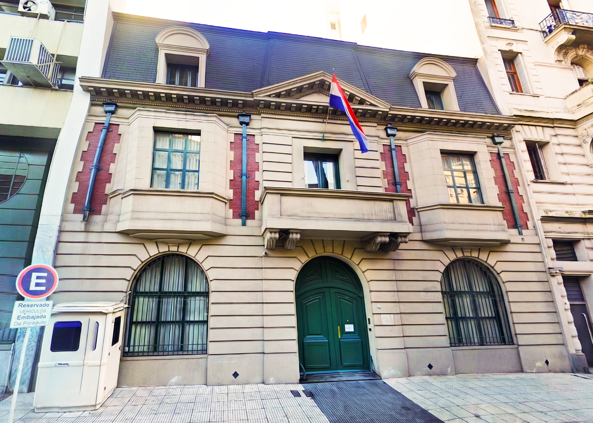
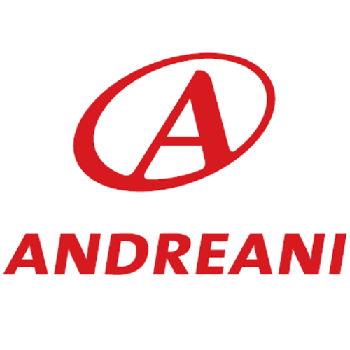

Alta complejidad
Los entornos donde la climatización no es confort, sino parte crítica de la operación: quirófanos, data centers, laboratorios e industria.
Ingeniería de climatización de alta complejidad para las constructoras y desarrolladores que lideran hospitales, data centers, edificios corporativos e infraestructura crítica.
Diseñamos climatización para los entornos donde no hay margen de error.
Los entornos donde la climatización no es confort, sino parte crítica de la operación: quirófanos, data centers, laboratorios e industria.
Aportamos la ingeniería del sistema de climatización. Ustedes conservan el cliente y el contrato; nosotros, el respaldo técnico.
Ingeniería, instalación, puesta en marcha y mantenimiento. Un equipo que acompaña desde el cálculo hasta la puesta en marcha y posterior mantenimiento.
 Universidad del Salvador
Universidad del Salvador
Una selección de proyectos realizados en Argentina: el respaldo técnico que hoy traemos a Paraguay.
VER PROYECTOSCuanto más exigente es el proyecto, más pesa la ingeniería correcta.

Quirófanos, áreas limpias y laboratorios. Presión diferencial, filtrado HEPA y continuidad de servicio bajo norma sanitaria.
Control de temperatura y humedad, redundancia y operación 24/7 sin ventanas de falla.
Sistemas VRF/VRV, agua helada y BMS para edificios de oficinas de alto estándar.

Ventilación y sistemas a medida para plantas e instalaciones industriales.

Climatización, extracción y ventilación mecánica conforme a normativa.

Preventivo, correctivo, re-ingeniería y monitoreo de sistemas existentes.

Auditoría de proyectos e instalaciones existentes: detectamos fallas de diseño, riesgos normativos y oportunidades de optimización.
Trabajamos codo a codo con las constructoras y desarrolladores que ya conocen el terreno, aportando la ingeniería de climatización que los proyectos más exigentes necesitan. Un aliado técnico que suma capacidad a tu obra.
Una muestra de nuestra trayectoria en los entornos más exigentes.

Climatización de quirófanos y áreas limpias bajo norma sanitaria, con control de presión diferencial sala por sala.

Refrigeración de precisión con control de temperatura y humedad para sala de servidores y monitoreo ininterrumpido.

Ya trabajamos para el Estado paraguayo: climatización moderna en un edificio patrimonial, respetando su arquitectura.
Confort y control ambiental crítico en un mismo edificio en altura: aulas, laboratorios y un bioterio con control dedicado.

Un mismo predio con demandas y horarios dispares: gastronomía, comercios, espectáculos y oficinas, resueltos sector por sector.
Ustedes conservan el cliente, el contrato y la relación comercial. Nosotros aportamos la ingeniería, la dirección técnica y la puesta en marcha del sistema de climatización. Un modelo pensado para que nos integremos a su obra solo cuando lo necesitan.
Empresas que confiaron en nosotros en Argentina

El Hospital Materno Infantil Teresa Germani incorporó climatización integral en internación, neonatología, salas de partos y áreas comunes, junto con quirófanos y unidades farmacológicas: espacios donde el sistema de climatización es parte directa de la bioseguridad del establecimiento, no solo del confort térmico.
Los quirófanos y áreas limpias operan bajo normativa sanitaria estricta en materia de presión diferencial, filtrado de aire y continuidad de servicio: el sistema no puede fallar ni comprometer la asepsia del espacio. El diseño exigió balance térmico local por local y mediciones de caudal en obra sobre cada sala.
Sistema central de agua helada con dos enfriadoras TROX-Aermec, fan coils Heatcraft en internación y UMAs TROX en áreas comunes, más seis unidades de tratamiento de aire farmacológicas TKZ dedicadas para quirófanos y áreas limpias, con triple etapa de filtrado y control de presión diferencial.
Con USD 500 millones proyectados en infraestructura hospitalaria en Paraguay para 2026, este caso es la referencia directa de cómo ElectroTerm puede operar bajo normativa sanitaria exigente.
Centro de monitoreo de tráfico urbano que opera de forma ininterrumpida las 24 horas, los 365 días del año: sala de control, sala de servidores, laboratorio técnico, oficinas y auditorio sobre 1.400 m² en tres plantas, donde la climatización sostiene a la vez el confort de los operadores y el equipamiento tecnológico.
En un entorno de operación crítica no existen ventanas de corte ni margen para fallas. Convivían además cargas muy dispares —sala de control de alta densidad, servidores y oficinas convencionales— que exigían independencia total entre zonas.
Sistemas VRF Gree zonificados por planta, con dos unidades de 22,4 kW en la sala de control y equipos de precisión tipo datacenter —con control de temperatura y humedad— dedicados a la sala de servidores, más cortinas de aire en accesos y presurización de escaleras. La ampliación del 2º piso se sumó luego sobre la misma arquitectura.
Es la referencia directa para infraestructura de operación crítica 24/7: salas de control, centros de monitoreo y entornos con equipamiento tecnológico sensible — la antesala natural de proyectos tipo data center.
La refuncionalización y puesta en valor del inmueble de la Embajada de la República del Paraguay en Buenos Aires —un edificio de 1920 legado al Estado paraguayo— lo transformó en su primer centro cultural en el exterior: biblioteca, sala de exposiciones, sala de turismo y despachos, en planta baja, dos pisos y terraza.
Integrar climatización moderna en un edificio patrimonial en restauración, conviviendo con la puesta en valor arquitectónica con mínimo impacto visual y estructural, y atender usos que van de exposiciones con 50 personas a despachos individuales.
Dos sistemas VRF Gree independientes con condensadoras compactas en terraza y unidades interiores seleccionadas ambiente por ambiente —cassettes en salas, murales en despachos—, con el mismo rigor de ingeniería de las obras de gran escala: balance térmico local por local y planos de ejecución propios.
Demuestra que la misma ingeniería se aplica con igual excelencia a obras de cualquier envergadura — y que ElectroTerm ya trabajó para el Estado paraguayo, en un edificio de su representación en Buenos Aires.
La sede de la Facultad de Medicina de la USAL es un edificio vertical sobre Av. Córdoba que combina aulas, laboratorios, biblioteca y oficinas con espacios de control ambiental crítico: un bioterio, un cuarto de cultivos y una morgue, cada uno con exigencias propias de temperatura, humedad y renovación de aire.
Convivir en un mismo edificio la climatización de confort de aulas y oficinas con entornos críticos donde temperatura, humedad y renovación de aire deben sostenerse sin interrupciones. El bioterio se diseñó bajo la guía internacional de cuidado de animales de laboratorio, con control automatizado dedicado.
Sistema VRV Daikin con recuperación de calor (Heat Recovery) para la climatización general —enfría y calienta zonas distintas en simultáneo— complementado con UMAs dedicadas de aire 100% exterior para bioterio, cuarto de cultivos y biblioteca, y presurización de cajas de escalera según normativa contra incendios.
Demuestra la capacidad de integrar confort y control ambiental crítico en un mismo edificio en altura: referencia directa para laboratorios, investigación y otros entornos de alta exigencia. Y a la vez, valida la ejecución en escala de aulas, oficinas y espacios corporativos de uso intensivo.
Tren de la Costa S.A. encargó la climatización del parque de diversiones más grande del país: restaurantes Remeros y Caribeño, locales comerciales de los edificios Feria y Puerto, auditorio Octógono, anfiteatro, circo, cabinas de peaje y edificio Vigía — 400 TR nominales más extracción mecánica en los sectores Puerto, Feria y Centro.
Un mismo predio con demandas térmicas y horarios de funcionamiento radicalmente distintos: desde un circo de 150 TR con picos de ocupación masiva hasta locales comerciales de 5 TR, pasando por gastronomía, espectáculos y oficinas.
Sistemas de expansión directa dimensionados sector por sector —circo 150 TR, gastronomía 40 TR, camarines 20 TR, diez locales comerciales de 5 a 10 TR— y oficinas administrativas con sistema VAV (caudal de aire variable) de 40 TR, con filtrado G4 en todo el parque.
La confianza escaló: el mismo cliente encargó luego las estaciones San Fernando, San Isidro, Anchorena y Libertador — un programa completo de ≈555 TR con un único aliado técnico. Exactamente el modelo de relación que propone este documento.